- កំណត់សញ្ញាណពហុកោណ
- កំណត់លក្ខណៈនៃត្រីកោណ
- រកផលបូកមុំក្នុងនិងក្រៅនៃត្រីកោណ
- កំណត់លក្ខណៈនៃចតុកោណកែងនិងការេ
- សង់ចតុកោណកែង ការេនិងត្រីកោណ ។
1. ពហុកោណ
1.1 សញ្ញាណពហុកោណ
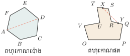
ពហុកោណជាផ្នែកមួយនៃប្លង់ខណ្ឌដោយខ្សែបាក់បិទជិត ។ គេមានពហុកោណប៉ោងនិងពហុកោណផត ។
ពហុកោណប៉ោងជាពហុកោណដែលស្ថិតនៅតែម្ខាងធៀបនឹងជ្រុងណាមួយ ។
- ចំណុច \(\displaystyle A, B, C, D, E\) និង \(\displaystyle F\) ជា កំពូលនៃពហុកោណប៉ោង ។
- អង្កត់ \(\displaystyle AB, BC, CD, DE, EF\) និង \(\displaystyle FA\) ជា ជ្រុងនៃពហុកោណប៉ោង ។
- អង្កត់ \(\displaystyle AC, AD, AE, \dots, FD\) ជា អង្កត់ទ្រូងនៃពហុកោណប៉ោង ។
- មុំ \(\displaystyle \angle ABC, \angle BCD, \angle CDE, \angle DEF\) និង \(\displaystyle \angle FAB\) ជា មុំក្នុងនៃពហុកោណប៉ោង \(\displaystyle ABCDEF\) ។
1.2 ប្រភេទនៃពហុកោណប៉ោង
គេកំណត់ប្រភេទពហុកោណទៅតាមចំនួនជ្រុងរបស់វា ។
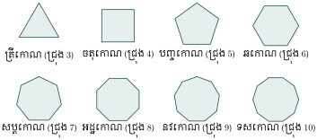
2. ត្រីកោណ
2.1 និយមន័យ
ពហុកោណដែលមានជ្រុង 3 ហៅថាត្រីកោណ ។ គេកំណត់សរសេរ \(\displaystyle \triangle ABC\) អានថាត្រីកោណ \(\displaystyle ABC\) ចំណុច \(\displaystyle A, B\) និង \(\displaystyle C\) ហៅថាកំពូលនៃត្រីកោណ ។ អង្កត់ \(\displaystyle AB, BC\) និង \(\displaystyle CA\) ហៅថាជ្រុងនៃត្រីកោណ \(\displaystyle \angle BAC\) ឬ \(\displaystyle \angle A\) , \(\displaystyle \angle ABC\) ឬ \(\displaystyle \angle B\) និង \(\displaystyle \angle ACB\) ឬ \(\displaystyle \angle C\) ហៅថា មុំក្នុងនៃត្រីកោណ \(\displaystyle ABC\) ។
គេអាចហៅថាត្រីកោណ \(\displaystyle ABC\) ឬ \(\displaystyle BCA\) ឬ \(\displaystyle CAB\) ។ ជ្រុងនិងមុំនៃត្រីកោណហៅថា ធាតុនៃត្រីកោណ ។ ត្រីកោណមួយមានធាតុ 9 គឺមុំបី ជ្រុងបី និងកំពូលបី គេថា \(\displaystyle \angle A\) ជាមុំឈមនឹងជ្រុង \(\displaystyle BC\) ហើយ \(\displaystyle \angle A\) និង \(\displaystyle \angle B\) ជាមុំជាប់នឹងជ្រុង \(\displaystyle AB\) ។
2.2 លក្ខណៈទូទៅនៃត្រីកោណ
| មេដ្យាន | កម្ពស់ | មេដ្យាទ័រ | កន្លះបន្ទាត់ពុះ |
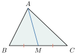 | 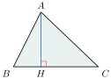 | 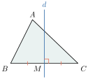 | 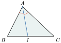 |
| \(\displaystyle M\) ចំណុចកណ្តាលនៃជ្រុង \(\displaystyle BC\) អង្កត់ \(\displaystyle AM\) ហៅថា មេដ្យាននៃ \(\displaystyle \triangle ABC\) ត្រូវនឹងជ្រុង \(\displaystyle BC\) ។ | \(\displaystyle AH \perp BC\) អង្កត់ \(\displaystyle AH\) ហៅថាកម្ពស់នៃ \(\displaystyle \triangle ABC\) ត្រូវនឹងជ្រុង \(\displaystyle BC\) ។ | \(\displaystyle M\) ចំណុចកណ្តាលនៃជ្រុង \(\displaystyle BC\) , \(\displaystyle d \perp BC\) ត្រង់ \(\displaystyle M\) បន្ទាត់ \(\displaystyle d\) ហៅថាមេដ្យាទ័រនៃ \(\displaystyle \triangle ABC\) ត្រូវនឹងជ្រុង \(\displaystyle BC\) ។ | \(\displaystyle \angle BAI = \angle IAC\) , \(\displaystyle [AI)\) ហៅថាកន្លះបន្ទាត់ពុះក្នុងនៃមុំ \(\displaystyle \angle A\) របស់ \(\displaystyle \triangle ABC\) ។ |
| ជាទូទៅ មេដ្យាននៃ \(\displaystyle \triangle ABC\) គឺជាអង្កត់ដែលភ្ជាប់ពីកំពូលទៅចំណុចកណ្តាលនៃជ្រុងឈម ។ | ជាទូទៅ កម្ពស់នៃ \(\displaystyle \triangle ABC\) គឺជាអង្កត់ដែលគូសចេញពីកំពូលទៅកែងនឹងជ្រុងឈម ឬ បន្លាយនៃជ្រុងឈម ។ | ជាទូទៅ មេដ្យាទ័រនៃ \(\displaystyle \triangle ABC\) គឺជាបន្ទាត់ដែលកែងនឹងជ្រុងត្រង់ចំណុចកណ្តាល ។ | ជាទូទៅ កន្លះបន្ទាត់ពុះមុំក្នុងនៃ \(\displaystyle \triangle ABC\) គឺជាកន្លះបន្ទាត់ដែលចែកមុំក្នុងជាពីរផ្នែកប៉ុនគ្នា ។ |
គូសត្រីកោណ \(\displaystyle ABC\) មួយរួចសង់ចំណុចដូចខាងក្រោម : \(\displaystyle I\) ជាចំណោលកែងនៃចំណុច \(\displaystyle A\) លើបន្ទាត់ \(\displaystyle BC\) , \(\displaystyle J\) ជាចំណោលកែងនៃចំណុច \(\displaystyle I\) លើបន្ទាត់ \(\displaystyle AB\) , \(\displaystyle K\) ជាចំណោលកែងនៃចំណុច \(\displaystyle J\) លើបន្ទាត់ \(\displaystyle AC\) , \(\displaystyle L\) ជាចំណោលកែងនៃចំណុច \(\displaystyle K\) លើបន្ទាត់ \(\displaystyle BC\) , \(\displaystyle M\) ជាចំណុចកណ្តាលនៃជ្រុង \(\displaystyle BC\) ។ បន្ទាត់ \(\displaystyle d\) កែងនឹងជ្រុង \(\displaystyle BC\) ត្រង់ចំណុច \(\displaystyle M\) ។
- ក. តើអង្កត់ \(\displaystyle AI\) តាងអ្វីចំពោះត្រីកោណ \(\displaystyle ABC\) ?
- ខ. តើអង្កត់ \(\displaystyle IJ\) តាងអ្វីចំពោះត្រីកោណ \(\displaystyle ABI\) ?
- គ. តើអង្កត់ \(\displaystyle AM\) តាងអ្វីចំពោះត្រីកោណ \(\displaystyle ABC\) ?
- ឃ. តើបន្ទាត់ \(\displaystyle d\) តាងអ្វីចំពោះជ្រុង \(\displaystyle BC\) នៃត្រីកោណ \(\displaystyle ABC\) ?
- ង. បង្ហាញថាបន្ទាត់ \(\displaystyle AI \parallel KL\) ។
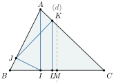
- ក. ដោយ \(\displaystyle I\) ជាចំណោលកែងនៃចំណុច \(\displaystyle A\) លើ \(\displaystyle BC\) នោះ \(\displaystyle AI \perp BC\) គេបាន \(\displaystyle AI\) ជាកម្ពស់នៃត្រីកោណ \(\displaystyle ABC\) ។
- ខ. ដោយ \(\displaystyle J\) ជាចំណោលកែងនៃចំណុច \(\displaystyle I\) លើ \(\displaystyle AB\) នោះ \(\displaystyle IJ \perp AB\) គេបាន \(\displaystyle IJ\) ជាកម្ពស់នៃត្រីកោណ \(\displaystyle ABI\) ។
- គ. ដោយ \(\displaystyle M\) ជាចំណុចកណ្តាលនៃជ្រុង \(\displaystyle BC\) នោះ \(\displaystyle AM\) ជាមេដ្យាននៃត្រីកោណ \(\displaystyle ABC\) ។
- ឃ. ដោយបន្ទាត់ \(\displaystyle d \perp BC\) ត្រង់ \(\displaystyle M\) ជាចំណុចកណ្តាលនៃជ្រុង \(\displaystyle BC\) នោះបន្ទាត់ \(\displaystyle d\) មេដ្យាទ័រនៃត្រីកោណ \(\displaystyle ABC\) ។
- ង. បង្ហាញថាបន្ទាត់ \(\displaystyle AI \parallel KL\) គេមាន \(\displaystyle AI \perp BC\) \(\displaystyle KL \perp BC\) នោះ \(\displaystyle AI \parallel KL\) ។
គូសត្រីកោណសមបាត \(\displaystyle ABC\) ដែលមានកំពូល \(\displaystyle A\) ។ ដៅ \(\displaystyle I\) ជាចំណុចកណ្តាលនៃបាត \(\displaystyle BC\) ។ គូសកម្ពស់នៃត្រីកោណ \(\displaystyle ABC\) ចេញពីកំពូល \(\displaystyle B\) និង \(\displaystyle C\) ។ តាង \(\displaystyle E\) ជាប្រសព្វរវាងកម្ពស់ទាំងពីរនេះ ។
- ក. តើបន្ទាត់ \(\displaystyle AE\) តាងអ្វីចំពោះត្រីកោណ \(\displaystyle ABC\) ? ព្រោះអ្វី ?
- ខ. បង្ហាញថាចំណុច \(\displaystyle A, E\) និង \(\displaystyle I\) រត់ត្រង់ជួរគ្នា ។
2.3 ប្រភេទត្រីកោណ
គេកំណត់ប្រភេទនៃត្រីកោណទៅតាមមុំនិងជ្រុងរបស់វា
| រូប | ឈ្មោះ | លក្ខណៈ |
 | ត្រីកោណ (សាមញ្ញ) | មុំទាំងបីមិនប៉ុនគ្នា \(\displaystyle \angle A \neq \angle B \neq \angle C\) ជ្រុងទាំងបីមិនប៉ុនគ្នា \(\displaystyle AB \neq BC \neq CA\) |
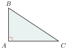 | ត្រីកោណកែង | មុំកែងមួយ \(\displaystyle \angle A\) ជាមុំកែង ជ្រុង \(\displaystyle AB \perp AC\) |
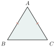 | ត្រីកោណសមបាត | មុំពីរប៉ុនគ្នា \(\displaystyle \angle B = \angle C\) ជ្រុងពីរប៉ុនគ្នា \(\displaystyle AB = AC\) |
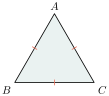 | ត្រីកោណសម័ង្ស | មុំទាំងបីប៉ុនគ្នា \(\displaystyle \angle A = \angle B = \angle C\) ជ្រុងទាំងបីប៉ុនគ្នា \(\displaystyle AB = BC = CA\) |
គេក៏អាចកំណត់ប្រភេទនៃត្រីកោណកែងទៅតាមមុំនិងជ្រុងរបស់វាដូចជា
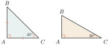
| ត្រីកោណកែងសមបាត | ត្រីកោណកន្លះសម័ង្ស |
ប្រាប់ប្រភេទនៃត្រីកោណនីមួយៗខាងក្រោមតាមជ្រុង និងមុំ ។
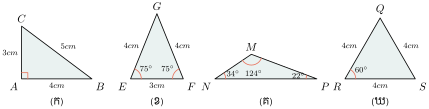
- (ក). ត្រីកោណ \(\displaystyle ABC\) មានមុំកែងមួយ ជាត្រីកោណកែង ។
- (ខ). ត្រីកោណ \(\displaystyle EGF\) មានជ្រុងពីរ ឬមុំបាតពីរមានរង្វាស់ស្មើគ្នា ជាត្រីកោណសមបាត ។
- (គ). ត្រីកោណ \(\displaystyle MNP\) មានជ្រុងទាំងបី ឬមុំទាំងបីមានរង្វាស់មិនស្មើគ្នា ជាត្រីកោណសាមញ្ញ ។
- (ឃ). ត្រីកោណ \(\displaystyle QRS\) មានជ្រុងទាំងបី ឬមុំទាំងបីមានរង្វាស់ស្មើគ្នា ជាត្រីកោណសម័ង្ស ។
ប្រាប់ប្រភេទនៃត្រីកោណនីមួយៗខាងក្រោមតាមមុំ
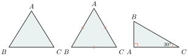
2.4 ផលបូកមុំក្នុងនិងមុំក្រៅនៃត្រីកោណ
ក. ផលបូកមុំក្នុងត្រីកោណ
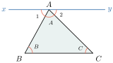
តាមកំពូល \(\displaystyle A\) នៃត្រីកោណ \(\displaystyle ABC\) គេគូសបន្ទាត់ \(\displaystyle xy \parallel BC\) ។
ផលបូកមុំក្នុងទាំងបីនៃត្រីកោណស្មើនឹង \(\displaystyle 180^\circ\) ។
វិបាក
| ត្រីកោណកែង | ត្រីកោណកែងសមបាត | ត្រីកោណសម័ង្ស |
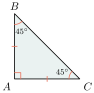 | 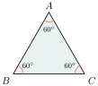 | |
| \(\displaystyle \angle B + \angle C = 90^\circ\) | \(\displaystyle \angle B = \angle C = 45^\circ\) | \(\displaystyle \angle A = \angle B = \angle C = 60^\circ\) |
គណនាមុំ \(\displaystyle x\) ក្នុងរូបខាងស្តាំ
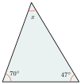
គេមាន \(\displaystyle x + 70^\circ + 47^\circ = 180^\circ\) ( ផលបូកមុំក្នុងត្រីកោណ )
ដូចនេះមុំ \(\displaystyle x = 63^\circ\) ។
គណនាមុំ \(\displaystyle x\) ក្នុងរូបខាងស្តាំ
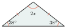
គេមាន \(\displaystyle 2x + 38^\circ + 38^\circ = 180^\circ\) ( \(\displaystyle 38^\circ\) ជាមុំបាតពិតនៃត្រីកោណសមបាត )
នាំឱ្យ \(\displaystyle x = 52^\circ\) ដូចនេះមុំ \(\displaystyle x = 52^\circ\) ។
ខ. ទំនាក់ទំនងរវាងមុំក្នុងនិងមុំក្រៅ
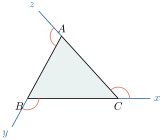
\(\displaystyle \angle ACx\) ហៅថា មុំក្រៅត្រង់ \(\displaystyle C\) នៃ \(\displaystyle \triangle ABC\)
\(\displaystyle \angle CBy\) ហៅថា មុំក្រៅត្រង់ \(\displaystyle B\) នៃ \(\displaystyle \triangle ABC\)
\(\displaystyle \angle BAz\) ហៅថា មុំក្រៅត្រង់ \(\displaystyle A\) នៃ \(\displaystyle \triangle ABC\)
គេដឹងថា \(\displaystyle \angle A + \angle B + \angle C = 180^\circ\) ( ផលបូកមុំក្នុងត្រីកោណ )
\(\displaystyle \angle A + \angle BAz = 180^\circ\) ( មុំជាប់បន្ថែម )
\(\displaystyle \angle A + \angle BAz = \angle A + \angle B + \angle C \implies \angle BAz = \angle B + \angle C\)
ដូចនេះ \(\displaystyle \angle BAz = \angle B + \angle C\) ។
មុំក្រៅមួយនៃត្រីកោណស្មើនឹងផលបូកមុំក្នុងពីរទៀតដែលមិនជាប់នឹងវា ។
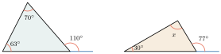
\(\displaystyle 110^\circ = 63^\circ + 47^\circ\) \(\displaystyle 77^\circ = 30^\circ + 47^\circ\)
គណនាមុំ \(\displaystyle x\) និង \(\displaystyle y\) ក្នុងរូបខាងស្តាំ ។
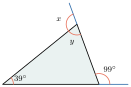
គេមាន \(\displaystyle y + 99^\circ + 39^\circ = 180^\circ\) ( ផលបូកមុំក្នុងត្រីកោណ ) \(\displaystyle y = 180^\circ - 138^\circ = 42^\circ\) ដូចនេះ មុំ \(\displaystyle y = 42^\circ\) ។ គេមាន \(\displaystyle x = 99^\circ + 39^\circ\) ( មុំក្រៅត្រីកោណ ) \(\displaystyle x = 138^\circ\) ដូចនេះ មុំ \(\displaystyle x = 138^\circ\) ។
គណនាមុំ \(\displaystyle x\) ក្នុងរូបខាងស្តាំ ៖
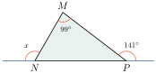
គណនាមុំ \(\displaystyle x\) \(\displaystyle \angle MPN + 141^\circ = 180^\circ\) ( មុំជាប់បន្ថែម ) \(\displaystyle \angle MPN = 180^\circ - 141^\circ = 39^\circ\) គេមាន \(\displaystyle x = 99^\circ + 39^\circ\) ( មុំក្រៅត្រីកោណ ) \(\displaystyle x = 138^\circ\) ដូចនេះ មុំ \(\displaystyle x = 138^\circ\) ។
ក្នុងរូបខាងក្រោមនេះ គណនាមុំ \(\displaystyle x\) និង \(\displaystyle y\)
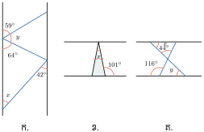
2.5 សំណង់ត្រីកោណ
សង់ត្រីកោណ \(\displaystyle ABC\) ដោយស្គាល់ \(\displaystyle \angle A = 60^\circ\) , \(\displaystyle AB = 4cm\) , \(\displaystyle AC = 5cm\) ។
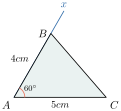
គូស \(\displaystyle AC = 5cm\) ដោយប្រើរ៉ាបទ័រគូស \(\displaystyle \angle CAx = 60^\circ\)
ដោយប្រើបន្ទាត់លេខដៅចំណុច \(\displaystyle B\) នៅលើ \(\displaystyle Ax\) ដែល \(\displaystyle AB = 4cm\) ទាញភ្ជាប់ឱ្យបានអង្កត់ \(\displaystyle CB\) ។ គេបានត្រីកោណ \(\displaystyle ABC\) ដែលសួររក ។
សង់ត្រីកោណ \(\displaystyle ABC\) ដោយស្គាល់ \(\displaystyle \angle A = 30^\circ\) , \(\displaystyle AC = 5cm\) , \(\displaystyle \angle C = 55^\circ\) ។
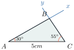
គូស \(\displaystyle AC = 5cm\) ដោយប្រើរ៉ាបទ័រគូស \(\displaystyle \angle CAx = 30^\circ\) និង \(\displaystyle \angle ACy = 55^\circ\) \(\displaystyle Ax\) និង \(\displaystyle By\) ប្រសព្វគ្នាត្រង់ចំណុច \(\displaystyle B\) ។ គេបានត្រីកោណ \(\displaystyle ABC\) ដែលសួររក ។
សង់ត្រីកោណ \(\displaystyle ABC\) ដោយស្គាល់ \(\displaystyle AB = 3cm\) , \(\displaystyle BC = 6cm\) , \(\displaystyle AC = 7cm\) ។
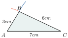
គូស \(\displaystyle AC = 7cm\) គូសរង្វង់ផ្ចិត \(\displaystyle A\) កាំ \(\displaystyle 3cm\) និងគូសរង្វង់ផ្ចិត \(\displaystyle C\) កាំ \(\displaystyle 6cm\) រង្វង់ទាំងពីរប្រសព្វគ្នាត្រង់ចំណុច \(\displaystyle B\) គូសភ្ជាប់ឱ្យបានអង្កត់ \(\displaystyle AB\) និង \(\displaystyle BC\) ។ គេបានត្រីកោណ \(\displaystyle ABC\) ដែលសួររក ។
- សង់ត្រីកោណសមបាត \(\displaystyle ABC\) ដោយស្គាល់បាត \(\displaystyle BC = 5cm\) និងជ្រុង \(\displaystyle AB = AC = 3cm\) ។
- សង់ត្រីកោណ \(\displaystyle ABC\) ដោយស្គាល់ \(\displaystyle \angle A = 60^\circ\) , \(\displaystyle BC = 5cm\) , \(\displaystyle AC = 4cm\) ។
- គេឱ្យត្រីកោណ \(\displaystyle ABC\) មួយ ។ សង់ត្រីកោណ \(\displaystyle DEF\) ដោយដឹងថា \(\displaystyle \triangle DEF\) ត្រួតស៊ីគ្នា នឹង \(\displaystyle \triangle ABC\) ។
3. ចតុកោណ
3.1 សញ្ញាណ
ចតុកោណជាពហុកោណដែលមានជ្រុង 4 ។
3.2 លក្ខណៈទូទៅនៃចតុកោណ
| ឈ្មោះ | រូប | លក្ខណៈ |
| ចតុកោណប៉ោងជា | \(\displaystyle A\) និង \(\displaystyle C\) , \(\displaystyle B\) និង \(\displaystyle D\) ជាកំពូលឈមគ្នា ។ \(\displaystyle AB\) និង \(\displaystyle CD\) , \(\displaystyle AD\) និង \(\displaystyle BC\) ជាជ្រុងឈមគ្នា ។ \(\displaystyle \angle A\) និង \(\displaystyle \angle C\) , \(\displaystyle \angle B\) និង \(\displaystyle \angle D\) ជាមុំឈមគ្នា ។ \(\displaystyle \angle A\) និង \(\displaystyle \angle B\) , \(\displaystyle \angle B\) និង \(\displaystyle \angle C\) ជាមុំជាប់នឹងជ្រុង តែមួយ \(\displaystyle AC\) និង \(\displaystyle BD\) ជាអង្កត់ទ្រូង ។ | |
| ចតុកោណខ្នែង | ជ្រុង \(\displaystyle BC\) និង \(\displaystyle AD\) កាត់គ្នាត្រង់ចំណុច \(\displaystyle O\) ដែលមិនមែនជាកំពូលនៃចតុកោណ ។ | |
| ចតុកោណផត | 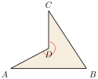 | បន្លាយនៃជ្រុង \(\displaystyle AD\) កាត់ជ្រុង \(\displaystyle BC\) ឬបន្លាយនៃជ្រុង \(\displaystyle CD\) កាត់ជ្រុង \(\displaystyle AB\) ។ |
គេមានចតុកោណ \(\displaystyle ABCD\) ។ រាប់ឈ្មោះ
- ក. ជ្រុងឈមពីរគូ
- ខ. ជ្រុងជាប់គ្នាបួនគូ
- គ. មុំឈមពីរគូ
- ឃ. កំពូលជាប់គ្នាបួនគូ
- ង. មុំជាប់គ្នាបួនគូ ។
- ក. ជ្រុងឈមពីរគូគឺ \(\displaystyle AB\) និង \(\displaystyle DC\) , \(\displaystyle AD\) និង \(\displaystyle BC\)
- ខ. ជ្រុងជាប់គ្នាបួនគូគឺ \(\displaystyle AB\) និង \(\displaystyle BC\) , \(\displaystyle BC\) និង \(\displaystyle DC\) , \(\displaystyle CD\) និង \(\displaystyle DA\) , \(\displaystyle DA\) និង \(\displaystyle AB\)
- គ. មុំឈមពីរគូគឺ \(\displaystyle \angle A\) និង \(\displaystyle \angle C\) , \(\displaystyle \angle B\) និង \(\displaystyle \angle D\)
- ឃ. កំពូលជាប់គ្នាបួនគូគឺ \(\displaystyle A\) និង \(\displaystyle B\) , \(\displaystyle B\) និង \(\displaystyle C\) , \(\displaystyle C\) និង \(\displaystyle D\) , \(\displaystyle D\) និង \(\displaystyle A\)
- ង. មុំជាប់គ្នាបួនគូគឺ \(\displaystyle \angle A\) និង \(\displaystyle \angle B\) , \(\displaystyle \angle B\) និង \(\displaystyle \angle C\) , \(\displaystyle \angle C\) និង \(\displaystyle \angle D\) , \(\displaystyle \angle D\) និង \(\displaystyle \angle A\) ។
3.3 ប្រភេទចតុកោណប៉ោង
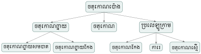
4. ចតុកោណកែង
4.1 សញ្ញាណ
បើមុំទាំងអស់នៃចតុកោណជាមុំកែងនោះ គេថាចតុកោណនោះជា ចតុកោណកែង ។
| ជាទូទៅ ចតុកោណកែង ជាចតុកោណដែលមានមុំកែង 4 ។ | 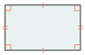 |
4.2 លក្ខណៈ
- មុំទាំងបួនជាមុំកែង
- ជ្រុងជាប់កែងគ្នា
- ជ្រុងឈមស្របគ្នា និងស្មើគ្នា ។
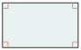
អង្កត់ទ្រូងមានរង្វាស់ស្មើគ្នា ហើយប្រសព្វគ្នាត្រង់ចំណុច កណ្ដាលរៀងៗខ្លួន ។
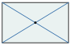
មេដ្យាទ័រនៃជ្រុងឈមជាអ័ក្សឆ្លុះ ហើយកែងគ្នានឹងប្រសព្វគ្នា ត្រង់ចំណុចកណ្ដាលរៀងៗ ។
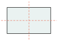
គេឱ្យចតុកោណកែង \(\displaystyle ABCD\) មួយ និង \(\displaystyle E\) ជាចំណុចប្រសព្វនៃអង្កត់ទ្រូងទាំងពីរ ។
- ក. បើ \(\displaystyle AE = 4cm\) គណនារង្វាស់ \(\displaystyle AC\) , \(\displaystyle EC\) , \(\displaystyle BD\) , \(\displaystyle DE\) និង \(\displaystyle EB\) ។
- ខ. បើ \(\displaystyle \angle BAE = 30^\circ\) ។ រករង្វាស់មុំ \(\displaystyle \angle ABE\) , \(\displaystyle \angle AEB\) , \(\displaystyle \angle BEC\) , \(\displaystyle \angle EBC\) , \(\displaystyle \angle BCE\) , \(\displaystyle \angle CDE\) និង \(\displaystyle \angle EDA\) ។
- ក. គណនារង្វាស់ \(\displaystyle AC = 2AE = 2 \times 4cm = 8cm\)
\(\displaystyle EC = AE = 4cm\)
\(\displaystyle BD = AC = 8cm\)
\(\displaystyle DE = EB = \frac{DB}{2} = 4cm\) ។
- ខ. បើ \(\displaystyle \angle BAE = 30^\circ\) ។ រករង្វាស់មុំ \(\displaystyle \angle ABE\) , \(\displaystyle \angle AEB\) , \(\displaystyle \angle BEC\) , \(\displaystyle \angle EBC\) , \(\displaystyle \angle BCE\) , \(\displaystyle \angle CDE\) និង \(\displaystyle \angle EDA\) ។
គេមាន \(\displaystyle AE = EB = 4cm\) នោះត្រីកោណ \(\displaystyle AEB\) សមបាត ។
\(\displaystyle \angle ABE = \angle BAE = 30^\circ\)
គេមាន \(\displaystyle \angle ABE + \angle BAE + \angle AEB = 180^\circ\) ( ផលបូកមុំក្នុង ត្រីកោណ )
នោះ \(\displaystyle \angle AEB = 180^\circ - 30^\circ - 30^\circ = 120^\circ\) ។
គេមាន \(\displaystyle \angle AEB + \angle BEC = 180^\circ\) ( មុំជាប់បន្ថែម )
នោះ \(\displaystyle \angle BEC = 180^\circ - 120^\circ = 60^\circ\) ។
គេមាន \(\displaystyle EB = EC = 4cm\) ហើយ \(\displaystyle \angle BEC = 60^\circ\) នោះត្រីកោណ \(\displaystyle EBC\) សម័ង្ស ។
នោះ \(\displaystyle \angle EBC = \angle ECB = \angle BEC = 60^\circ\)
គេមាន \(\displaystyle \angle CDE = \angle EBA = 30^\circ\) ( មុំឆ្លាស់ក្នុង )
គេមាន \(\displaystyle \angle EDA = \angle EBC = 60^\circ\) ( មុំឆ្លាស់ក្នុង ) ។
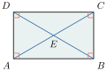
4.3 សំណង់ចតុកោណកែង
សង់ចតុកោណកែង \(\displaystyle ABCD\) ដោយស្គាល់ \(\displaystyle AB = 3.5cm\) , \(\displaystyle AD = 5cm\) ។
គូស \(\displaystyle AD = 5cm\)
តាម \(\displaystyle A\) គូស \(\displaystyle Ax\) ដែល \(\displaystyle Ax \perp AD\)
ដោយប្រើបន្ទាត់លេខដៅចំណុច \(\displaystyle B\) នៅលើ \(\displaystyle Ax\) ដែល \(\displaystyle AB = 3.5cm\) ។
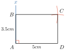
គូសរង្វង់ផ្ចិត \(\displaystyle B\) កាំ \(\displaystyle 5cm\) និងគូសរង្វង់ផ្ចិត \(\displaystyle D\) កាំ \(\displaystyle 3.5cm\)
រង្វង់ទាំងពីរប្រសព្វគ្នាត្រង់ចំណុច \(\displaystyle C\)
គូសភ្ជាប់អង្កត់ \(\displaystyle BC\) និង \(\displaystyle CD\)
គេបានចតុកោណកែង \(\displaystyle ABCD\) ដែលត្រូវរក ។
សង់ចតុកោណកែង \(\displaystyle ABCD\) ដោយស្គាល់ \(\displaystyle AD = 5cm\) និង \(\displaystyle \angle DAC = 30^\circ\) ។
គូស \(\displaystyle AD = 5cm\)
ដោយប្រើរ៉ាប័រទ័រគូស \(\displaystyle \angle DAx = 30^\circ\) និងត្រង់ \(\displaystyle D\) គូស \(\displaystyle Dy \perp DA\) ដែល \(\displaystyle Dy \cap Ax = \{C\}\) ។
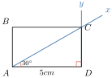
គូសរង្វង់ផ្ចិត \(\displaystyle C\) កាំ \(\displaystyle DA\) និងគូសរង្វង់ផ្ចិត \(\displaystyle A\) កាំ \(\displaystyle DC\) រង្វង់ទាំងពីរប្រសព្វគ្នាត្រង់ចំណុច \(\displaystyle B\)
គូសភ្ជាប់ \(\displaystyle BC\) និង \(\displaystyle AB\)
គេបានចតុកោណកែង \(\displaystyle ABCD\) ដែលត្រូវសង់ ។
- សង់ចតុកោណកែង \(\displaystyle ABCD\) ដោយស្គាល់ \(\displaystyle AB = 4.5cm\) , \(\displaystyle AD = 3.5cm\)
- សង់ចតុកោណកែង \(\displaystyle ABCD\) ដោយស្គាល់ \(\displaystyle AB = 64mm\) និង \(\displaystyle \angle BAC = 60^\circ\)
5. ការេ
5.1 និយមន័យ
ការេ ជាចតុកោណកែងដែលមានជ្រុងជាប់គ្នាប៉ុនគ្នា ។
គេបាន \(\displaystyle ABCD\) ចតុកោណកែង \(\displaystyle AB = AD\) ។ ដូចនេះ \(\displaystyle ABCD\) ជាការេ ។
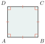
5.2 លក្ខណៈការេ
- មុំទាំងបួនជាមុំកែង
- ជ្រុងទាំងបួនប៉ុនគ្នា ។
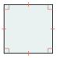
អង្កត់ទ្រូងប៉ុនគ្នា ហើយ កែងគ្នាត្រង់ចំណុចកណ្ដាល រៀងៗ ។ អង្កត់ទ្រូងជាកន្លះ បន្ទាត់ពុះនៃមុំឈមហើយជាអ័ក្សឆ្លុះ ។
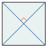
មេដ្យាទ័រនៃជ្រុងឈម ជាអ័ក្សឆ្លុះ ។ ហើយកែងគ្នានិងប្រសព្វគ្នា ត្រង់ចំណុចកណ្ដាលរៀងៗ ។
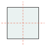
គេមាន \(\displaystyle MNPQ\) ជាការេ ។
- ក. រករង្វាស់មុំស្រួចនីមួយៗ ។
- ខ. រាប់ត្រីកោណទាំង 8 ក្នុងរូបដោយបញ្ជាក់ពីប្រភេទ របស់វាផង ។
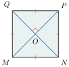
ក. រករង្វាស់មុំស្រួចនីមួយៗ ។
ត្រីកោណកែង \(\displaystyle MON\) , \(\displaystyle NOP\) , \(\displaystyle POQ\) , \(\displaystyle QOM\) មាន \(\displaystyle OM = OP = OQ = ON\) ជា ត្រីកោណកែងសមបាត ។
គេបានមុំស្រួច \(\displaystyle \angle OMN = \angle ONM = \angle ONP = \angle OPN = \angle OPQ = \angle OQP\)
\(\displaystyle = \angle OQM = \angle OMQ\)
\(\displaystyle = 45^\circ\) ។
ខ. រាប់ត្រីកោណទាំង 8 ក្នុងរូបដោយបញ្ជាក់ពីប្រភេទរបស់វាផង ។
ត្រីកោណកែង \(\displaystyle MON\) , \(\displaystyle NOP\) , \(\displaystyle POQ\) , \(\displaystyle QOM\) មាន \(\displaystyle OM = OP = OQ = ON\) ជា ត្រីកោណកែងសមបាត ។
ត្រីកោណកែង \(\displaystyle MPN\) , \(\displaystyle MQP\) , \(\displaystyle PNQ\) , \(\displaystyle QNM\) មាន \(\displaystyle MN = NP = PQ = QM\) ជា ត្រីកោណកែងសមបាត ។
5.3 សំណង់ការេ
សង់ការេ \(\displaystyle ABCD\) ដោយស្គាល់ជ្រុង \(\displaystyle AD = 4cm\) ។
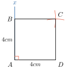
គូស \(\displaystyle AD = 4cm\) តាម \(\displaystyle A\) គូស \(\displaystyle Ax \perp DA\) ដោយប្រើបន្ទាត់លេខដៅចំណុច \(\displaystyle B\) នៅលើ \(\displaystyle Ax\) ដែល \(\displaystyle AB = 4cm\) ។ គូសរង្វង់ផ្ចិត \(\displaystyle B\) កាំ \(\displaystyle AD = 4cm\) និងគូសរង្វង់ផ្ចិត \(\displaystyle D\) កាំ \(\displaystyle AD = 4cm\) រង្វង់ទាំងពីរប្រសព្វគ្នាត្រង់ចំណុច \(\displaystyle C\) គូសភ្ជាប់ឱ្យបានអង្កត់ \(\displaystyle BC\) និង \(\displaystyle CD\) គេបាន ការេ \(\displaystyle ABCD\) ដែលត្រូវសង់ ។
សង់ការេ \(\displaystyle ABCD\) ដោយស្គាល់អង្កត់ទ្រូង \(\displaystyle AC = 6cm\) ។
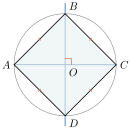
គូស \(\displaystyle AC = 6cm\) ។ គូសរង្វង់ផ្ចិត \(\displaystyle O\) អង្កត់ផ្ចិត \(\displaystyle AC = 6cm\) ។ គូសបន្ទាត់កែងនឹងអង្កត់ផ្ចិត \(\displaystyle AC\) ត្រង់ \(\displaystyle O\) ។ បន្ទាត់នេះកាត់រង្វង់ត្រង់ពីរចំណុច \(\displaystyle B\) និង \(\displaystyle D\) ។ គូសភ្ជាប់ឱ្យបានអង្កត់ \(\displaystyle AB \; , \; BC \; , \; CD\) និង \(\displaystyle DA\) ។ គេបានការេ \(\displaystyle ABCD\) ដែលសួររក ។
- សង់ការេ \(\displaystyle ABCD\) ដោយស្គាល់ជ្រុង \(\displaystyle AB = 4.6cm\) ។
- សង់ការេ \(\displaystyle ABCD\) ដោយស្គាល់អង្កត់ទ្រូង \(\displaystyle BD = 7cm\) ។
គេមានចតុកោណកែង \(\displaystyle ABCD\) ដូចរូបខាងស្តាំដែល \(\displaystyle AB = 24cm \; , \; BC = 10cm\) និង \(\displaystyle AE = 13cm\) ។
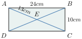
- ក. គណនាបរិមាត្រនៃចតុកោណកែង \(\displaystyle ABCD\) ។
- ខ. គណនាបរិមាត្រនៃត្រីកោណ \(\displaystyle BCD\) ។
- គ. គណនាបរិមាត្រនៃត្រីកោណ \(\displaystyle BEC\) ។
- ឃ. គណនាបរិមាត្រនៃត្រីកោណ \(\displaystyle DEC\) ។
លំហាត់
- គេមានត្រីកោណ \(\displaystyle REC\) កែងត្រង់ \(\displaystyle E\) ។ ចូរបំពេញ ៖ \(\displaystyle \angle R + \angle C = \dots\dots\)
- គេមានត្រីកោណសម័ង្ស \(\displaystyle MOS\) ។ គណនារង្វាស់មុំក្នុងនីមួយៗនៃត្រីកោណសម័ង្ស \(\displaystyle MOS\) ។
- សង់ត្រីកោណសមបាត \(\displaystyle ISO\) ដោយដឹងថា \(\displaystyle IS = IO = 52mm\) និង \(\displaystyle OS = 32mm\) រួចគណនាកម្ពស់ចេញពី \(\displaystyle I\) ។
- សង់ត្រីកោណសម័ង្ស \(\displaystyle OUI\) ដោយដឹងថា \(\displaystyle IO = 4cm\) រួចគូសមេដ្យានចេញពី \(\displaystyle O\) ។
- សង់ត្រីកោណកែង \(\displaystyle REC\) កែងត្រង់ \(\displaystyle E\) ដោយដឹងថា \(\displaystyle ER = 6cm\) និង \(\displaystyle EC = 8cm\) រួចគណនាប្រវែងអ៊ីប៉ូតេនុស ។
- សង់ត្រីកោណ \(\displaystyle LAC\) ដោយដឹងថា \(\displaystyle LA = 6cm \; , \; AC = 8cm\) និង \(\displaystyle CL = 11cm\) ។ រួចគណនាប្រវែងបរិមាត្រត្រីកោណ ។
- ក្នុងត្រីកោណមួយ មុំមួយមានរង្វាស់ \(\displaystyle 29^\circ\) មុំមួយទៀតមានរង្វាស់ \(\displaystyle 57^\circ\) ។ គណនារង្វាស់មុំទីបី ។
- មុំកំពូលនៃត្រីកោណសមបាតមួយមានរង្វាស់ \(\displaystyle 2/3\) នៃរង្វាស់មុំកែង ។ គណនារង្វាស់មុំបាតនៃត្រីកោណ ។
- មុំស្រួចមួយនៃត្រីកោណកែងមានរង្វាស់ \(\displaystyle \frac{2}{5}\) នៃរង្វាស់មុំកែង ។ គណនារង្វាស់មុំស្រួចមួយទៀតនៃត្រីកោណ ។
- សង់ចតុកោណ \(\displaystyle ABCD\) មួយដោយស្គាល់ \(\displaystyle AB = 5cm \; , \; \angle B = 70^\circ \; , \; BC = 7cm \; ,\) \(\displaystyle \angle C = 90^\circ\) និង \(\displaystyle CD = 10cm\) ។
- សង់ចតុកោណកែង \(\displaystyle ABCD\) ដោយស្គាល់ \(\displaystyle AB = 5cm \; , \; AD = 7cm\) ។
- សង់ចតុកោណកែង \(\displaystyle ABCD\) ដោយស្គាល់ \(\displaystyle AB = 64mm\) និង \(\displaystyle \angle BAC = 50^\circ\) ។
- សង់ការេ \(\displaystyle ABCD\) ដោយស្គាល់ជ្រុង \(\displaystyle AB = 3.5cm\) ។
- បង្ហាញថា កន្លះបន្ទាត់ពុះមុំក្នុងនៃប្រលេឡូក្រាមមួយកំណត់បានចតុកោណកែងមួយ ។
- ផលបូករង្វាស់មុំក្នុងពីរនៃត្រីកោណមួយស្មើនឹង \(\displaystyle 130^\circ\) ហើយផលដករបស់វាស្មើនឹង \(\displaystyle 20^\circ\) ។ គណនារង្វាស់មុំក្នុងទាំងបីនៃត្រីកោណនេះ ។
រាប់ឈ្មោះការេ និងចតុកោណកែងក្នុងរូបខាងស្តាំ ។
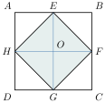
ខ្លឹមសារ៖ សៀវភៅពុម្ពគណិតវិទ្យាថ្នាក់ទី៧ របស់ក្រសួងអប់រំ យុវជន និងកីឡា · វាយអត្ថបទ គូររូបភាពឡើងវិញ និងរៀបចំលើអនឡាញដោយលោកគ្រូ សាន សុខលី សម្រាប់ការសិក្សាដោយឥតគិតថ្លៃ និងមិនរកប្រាក់ចំណេញ។ មិនមែនជាការបោះពុម្ពផ្លូវការរបស់ក្រសួងទេ។